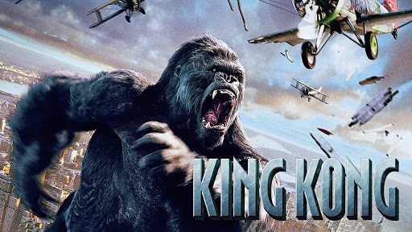

Genre: Superhero film
Initial release: In the United States on May 2, 2008
A billionaire industrialist and genius inventor, Tony Stark (Robert Downey Jr.), is conducting weapons tests overseas, but terrorists kidnap him to force him to build a devastating weapon. Instead, he builds an armored suit and upends his captors. Returning to America, Stark refines the suit and uses it to combat crime and terrorism
Genre:Comedy and Drama
Initial release:December 25, 2009
In college, Farhan and Raju form a great bond with Rancho due to his positive and refreshing outlook to life. Years later, a bet gives them a chance to look for their long-lost friend whose existence seems rather elusive
Genre: Fantastic and Horrible film
Initial release: December 14, 2005
Peter Jackson's expansive remake of the 1933 classic follows director Carl Denham (Jack Black) and his crew on a journey from New York City to the ominous Skull Island to film a new movie. Accompanying him are playwright Jack Driscoll (Adrien Brody) and actress Ann Darrow (Naomi Watts), who is whisked away by the monstrous ape, Kong, after they reach the island. The crew encounters dinosaurs and other creatures as they race to rescue Ann, while the actress forms a bond with her simian captor
Genre:Action and Adventure film
Initial release:October 20, 2011 (USA)
In a future where time is money and the wealthy can live forever, Will Salas (Justin Timberlake) is a poor man who rarely has more than a day's worth of life on his time clock. When he saves Henry Hamilton (Matt Bomer) from time thieves, Will receives the gift of a century. However, such a large transaction attracts the attention of the authorities, and when Will is falsely accused of murder, he must go on the run, taking the daughter (Amanda Seyfried) of an incredibly wealthy man with him
Genre:Biography, Drama
Initial release:December 25, 2007 (USA)
Poet and professor Melvin B. Tolson (Denzel Washington) teaches at the predominately black Wiley College in 1935 Texas. He decides to start a debate team, something nearly unheard of at a black college. While at first he butts heads with the influential father (Forest Whitaker) of one of his best debators, eventually he is able to form a team of strong-minded, intelligent young students, and they become the first black debate team to challenge Harvard's prestigious debate champions